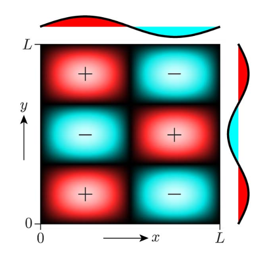
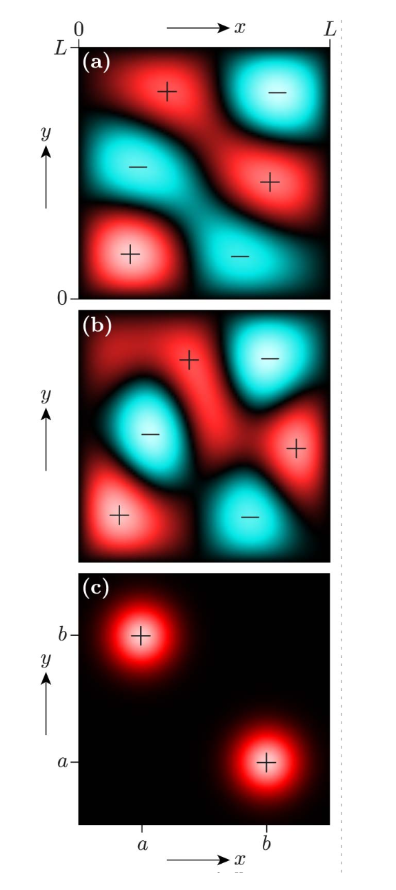
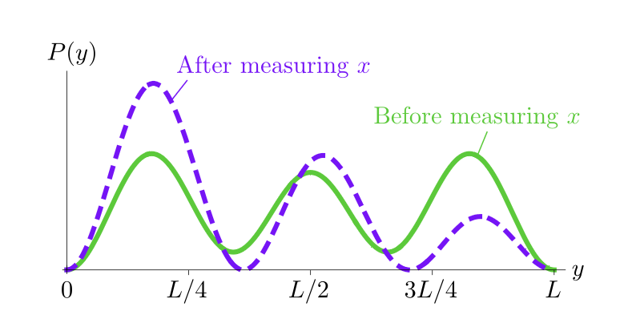
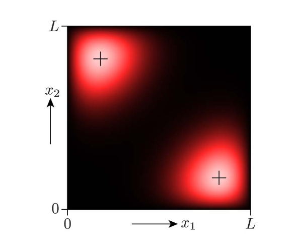
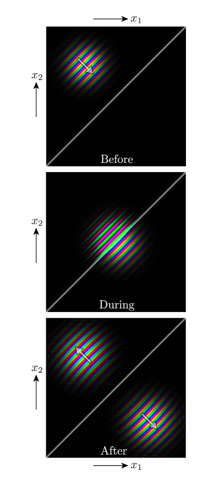
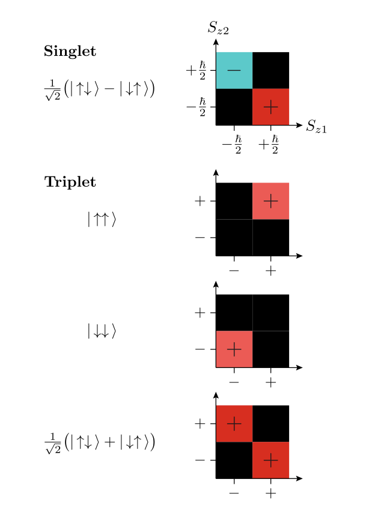

Entanglement Isn't Just for Spin¶
This page highlights some of my favorite insights from Daniel V. Schroeder's paper [1]:
"Entanglement isn't just for spin", American Journal of Physics 85, 812 (2017) arXiv: 1703.10620
The paper shows that quantum entanglement occurs not just in spin systems, but also in the spatial wave functions of particles. You can see entanglement in simple 2D systems that are easy to visualize.
Key Pedagogical Insight¶
A powerful insight from the paper is that you can first study a single particle in 2D, with a wavefunction \(\psi(x, y)\), and learn to see the difference between separable states (which factor into \(X(x)Y(y)\)) and non-separable states (whose x- and y-shapes depend on each other).
Once students can visually recognize non-separability in 2D plots, you then make the simple substitution \((x,y) \to (x_1, x_2)\). Instantly, the same mathematics describes a two-particle system, and the same non-separability now becomes true entanglement between particle 1 and particle 2.
One Particle in Two Dimensions¶
Consider a particle in a 2D square box (infinite square well), where both x and y go from 0 to L.
Example 1: A Separable Wave Function¶
The simplest solutions have the form:
This is called separable because it factors into a function of x times a function of y:
Here's what the state with \(n_x = 2, n_y = 3\) looks like:

Figure 1 (from [1]): A separable wave function. Red = positive, cyan = negative, black = zero. The 1D functions along the top and right show how this factors into \(f(x) \times g(y)\).
Example 2: A Non-Separable Wave Function¶
Now consider a superposition of two energy eigenstates:
Even though this is built from separable pieces, the sum itself is not separable - you cannot write it as a single function of x times a single function of y.

Figure 2 (from [1]): Non-separable wave functions. (a) A superposition of two states. (b) Superposition with three states. (c) A "cat state" with isolated peaks at opposite corners.
How to See the Difference: Slice the Wave Function¶
The key to understanding separability is to slice the 2D wave function at different values of x and look at what y-dependence you get.
For a Separable Wave Function:¶
If you fix x at some value \(x_0\), you get:
The y-dependence is always \(g(y)\) - the same function shape - just scaled by the constant \(f(x_0)\).
Key point: Different slices (different values of \(x_0\)) give the same y-pattern, just with different amplitudes.
For a Non-Separable Wave Function:¶
If you fix x at value \(x_0\), you get some function of y. But if you fix x at a different value \(x_0'\), you get a different shaped function of y.
Key point: Different slices give different y-patterns - not just different amplitudes, but different shapes entirely.
Measuring One Coordinate Affects the Other¶
The physical difference shows up in measurements:
Before measuring x, the probability distribution for y is:
Geometric interpretation: - This integral sums along a horizontal line at height y - You're adding up the brightness across the entire row - \(P(y)\) is literally the "horizontal brightness profile"
Why this matters: - If a horizontal slice is mostly dark → the integral adds up small numbers → \(P(y)\) is small - If a horizontal slice is bright across many x-values → the integral adds up larger numbers → \(P(y)\) is large
After measuring x and getting result \(x_0\), the wave function "collapses" to:
Now you're looking at a vertical line at \(x_0\) - only that x-value survives.
Quick summary: - Before x-measurement: \(P(y) = \int |\psi(x,y)|^2 dx\) → horizontal line → sum over all x - After x-measurement: \(P(y|x_0) = |\psi(x_0, y)|^2\) → vertical line → only that x survives
Example: The Non-Separable State¶
For the wave function in Figure 2(a), here's what happens:

Figure 3 (from [1]): Probability distribution for measuring y. Green (solid) = before measuring x. Purple (dashed) = after measuring x and getting \(x = L/4\). The measurement changes the distribution!
Before measuring x: The green curve shows three peaks with certain relative heights.
After measuring x = L/4: The purple curve shows the same three peaks, but now the peak at \(y = L/4\) is much more likely, and the peak at \(y = 3L/4\) is much less likely.
The measurements are correlated! Measuring x changes what we expect to see when we measure y.
How Interactions Create Entanglement¶
So far we've seen examples of entangled states, but how do particles become entangled? The answer: interactions between particles.
Two Particles with Repulsive Interaction in a box at steady state¶
Consider two particles in a 1D infinite square well that repel each other. The interaction potential is:
What this means physically:
- When \(x_1 \approx x_2\) (particles close together) → exponential is large → strong repulsion
- When \(x_1\) and \(x_2\) are far apart → exponential is tiny → almost no repulsion
The particles "hate" being near each other. Their lowest-energy arrangement keeps them far apart.
Reading the Ground State Wave Function¶

Figure 5 (from [1]): Ground state wave function for two repelling particles in a 1D box (0 to L). Horizontal axis = position of particle 1 (\(x_1\)). Vertical axis = position of particle 2 (\(x_2\)). Bright = high probability, dark = low probability. "Left" = 0 < x < L/2, "Right" = L/2 < x < L.
Important: This shows what the wave function looks like IF you prepare the system in the ground state. The Schrödinger equation conserves energy - it doesn't push particles toward lower energy states. If you prepare particles in an excited state or superposition, they stay in that state (though superpositions will have oscillating phases). This ground state is just one possible stationary solution, not something the system naturally evolves into.
Key features:
- The diagonal \(x_1 = x_2\) is dark - particles strongly avoid being in the same place (where repulsion is largest)
- Two bright peaks - when you measure the particles, you're most likely to find:
- One particle on the left, the other on the right (top-left corner)
- One particle on the right, the other on the left (bottom-right corner)
- These are exactly the arrangements where particles stay far apart!
Dynamics: Watching Entanglement Form in Real Time¶
The ground state above is stationary - the probability distribution doesn't change with time. But what if the particles aren't in an energy eigenstate? What if they're moving?
A Scattering Event¶
Two equal-mass particles in 1D start as separated Gaussian wave packets moving toward each other. They interact via a short-range rectangular barrier:
The parameters V₀ and a are chosen so transmission and reflection probabilities are approximately equal.

Figure 6 (from [1]): Time evolution of a two-particle scattering event. Three snapshots: Before, During, and After the interaction. The diagonal gray line shows where x₁ = x₂. Rainbow colors indicate the phase of the wave function (arrows show direction of motion). Brightness shows the magnitude (probability density).
Understanding Configuration Space¶
Critical: Don't confuse the map with the territory
This plot shows configuration space (x₁, x₂), not real space. Each point represents where BOTH particles are simultaneously.
What you're seeing:¶
• Before: ONE blob in upper-left corner - Particle 1 on left, particle 2 on right (definite configuration) - In real space: two separated wave packets moving toward each other - Separable (product) state
• During: The wave packets collide and scatter via repulsion
• After: TWO blobs appear - Top-left blob: particle 1 left, particle 2 right (reflection - bounced off each other) - Bottom-right blob: particle 1 right, particle 2 left (transmission - passed through) - Why two blobs? When wave packets collide, there are two possible outcomes: they can bounce back (reflection) or pass through each other (transmission). Quantum mechanics keeps both outcomes in superposition - that's why you see two blobs instead of one - The rainbow stripes show both blobs moving apart (arrows show direction of motion) - Note: There are still tiny probability tails near the diagonal (where particles would be close together), but the probability is extremely small compared to the two dominant peaks
Testing for Entanglement: The Slicing Method¶
The "Before" state is NOT entangled¶
The Before state is separable: ψ(x₁,x₂) = ψ₁(x₁)·ψ₂(x₂). This means:
• The slicing test: Draw a vertical line anywhere (fix x₁). The distribution you see for x₂ always has the same shape - just a different height • Measuring particle 1's position doesn't change the shape of particle 2's distribution • Geometrically: the blob is round/oval - not tilted, not split
The "After" state IS entangled¶
The After state is entangled: ψ(x₁,x₂) ≠ ψ₁(x₁)·ψ₂(x₂). Now:
• The slicing test fails: Draw a vertical line on the left → you see a bump at the top (x₂ large). Draw one on the right → you see a bump at the bottom (x₂ small) • Measuring particle 1's position completely changes particle 2's distribution • Geometrically: the blob is split diagonally - two separate peaks along the anti-diagonal
Summary: The visual test¶
The test for entanglement: Slide a vertical line across the plot. If every slice gives the same shape in x₂ → separable. If different slices give different shapes → entangled.
Why Fig. 5 is Frozen But Fig. 6 Evolves¶
Fig. 5 (ground state) is an energy eigenstate. Time evolution only adds a global phase: Ψ(x₁,x₂,t) = e^(-iEt/ℏ)Ψ(x₁,x₂,0). The phase factor cancels when you calculate |Ψ|², so the probability distribution never changes. The pattern is frozen.
Fig. 6 (scattering) starts with moving Gaussian wave packets - NOT energy eigenstates. Each packet is a superposition of many momenta and energies. Different energy components oscillate at different rates, causing the packets to move, spread, collide, and interfere. Wave packets must evolve in time.
The rainbow colors in Fig. 6 show the phase gradient (momentum direction). Arrows point in the direction of motion: initially toward each other, then apart after scattering.
Why Can't We See This in Real Space?¶
In real 1D physical space, you always see two bumps (the two particles) - before, during, and after the collision. After scattering, both outcomes (reflection and transmission) look identical in real space: one bump moving left, one moving right. Real space cannot distinguish which particle is which or whether they bounced vs. passed through.
Configuration space reveals what real space hides: The two blobs in Fig. 6 show that reflection and transmission exist in superposition. One blob represents "particle 1 left, particle 2 right" and the other represents "particle 1 right, particle 2 left" - these are correlated outcomes, not just two independent particles. This correlation is entanglement, and it's only visible when you plot both particle positions simultaneously in 2D configuration space.
The key difference: Real space shows where particles are. Configuration space shows which combinations of positions are correlated - that's where entanglement lives.
Application: Why Electrons Act Like Wave Packets in Real Metals¶
In a perfect crystal, electrons should be extended Bloch waves spread across the entire metal (like particle in a box eigenstates). But in real metals, we treat electrons as localized wave packets moving with definite velocities. Why?
The answer: entanglement with heavy ions.
Configuration Space Picture¶
Consider an electron-ion interaction in configuration space (x_electron, x_ion):
BEFORE INTERACTION:
x_ion
^
|
x₀|====================== ← long horizontal stripe
| (electron delocalized everywhere,
| ion localized at x₀)
+-----------------------> x_electron
AFTER INTERACTION:
x_ion
^
|
x₀| *** *** ← TWO short horizontal segments
| (electron localized into wave packets)
+-----------------------> x_electron
What happened: The interaction V(x_e - x_ion) creates entanglement, just like in Fig. 6. The time-dependent Schrödinger equation evolves the initial separable state into a non-separable superposition.
Why Heavy Ions Localize Electrons¶
Heavy ions have: - Tiny de Broglie wavelength (λ = h/mv, huge m → tiny λ) - Very sharp position localization - Essentially fixed position (act like delta functions)
When the electron interacts with a well-localized ion, the conditional electron wavefunction ψ_e(x_e | x_ion ≈ x₀) ∝ Ψ(x_e, x₀) becomes a localized wave packet instead of an extended Bloch wave. This is exactly the "slicing test" from the paper: measuring (or knowing) one particle's position changes the other particle's distribution.
Repeated Scattering Creates Effective Wave Packets¶
In real metals, electrons constantly scatter off vibrating ions (phonons), impurities, and defects. Each interaction: - Creates entanglement between electron and ion - Destroys long-range coherence of the Bloch wave - Effectively localizes the electron over a finite region (mean free path)
The result: Electrons behave as quasiparticle wave packets with finite spatial extent and definite momentum, not as extended eigenstates of the perfect crystal. This is why electron transport is diffusive (resistivity) rather than ballistic, and why we can think of electrons as localized packets moving through the metal.
The heavy ion acts like a continuous measurement - not a sharp collapse, but decoherence through entanglement that gives electrons their packet-like character.
Connection to Spin Systems¶
The same mathematics applies to two spin-1/2 particles. Instead of plotting ψ(x₁, x₂), you plot the four spin state amplitudes in a 2×2 grid, where the axes represent the spin z-components (↑ or ↓) of each particle.

Figure 7 (from [1]): 2×2 density plots for singlet and triplet states of two spin-1/2 particles. The horizontal axis shows particle 1's spin (−ℏ/2 or +ℏ/2), the vertical axis shows particle 2's spin. Bright colors show larger amplitudes, black shows zero. The singlet state (top) is entangled - measuring one spin immediately determines the other. The triplet states show different correlation patterns.
The visual pattern is identical to the spatial case: entangled states show correlations (anti-diagonal pattern for singlet), while separable states have simpler structures. This correspondence helps students recognize entanglement across different quantum systems.
References¶
[1] D. V. Schroeder, "Entanglement isn't just for spin," Am. J. Phys., vol. 85, no. 11, pp. 812–820, Nov. 2017, doi: 10.1119/1.5003808. Available: https://arxiv.org/abs/1703.10620